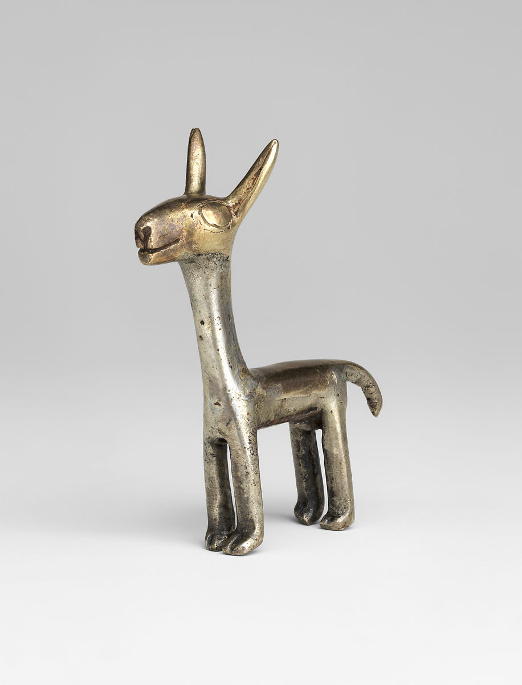
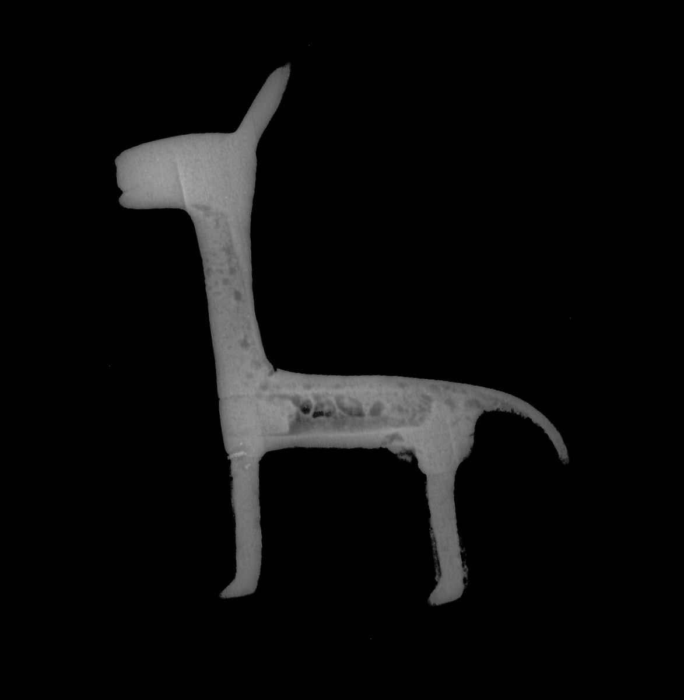

-

- 
- 
Camelid figurine
1400–1533
This male camelid figurine, potentially representing a llama, has a solid head and a hollow body. While many similar camelid figurines are made of hammered sheet, X-radiography confirms that this figurine was cast by the lost wax method (see image 3) in two distinct casting stages to achieve different metallic effects. The first step was the casting of the llama’s head (see image 4), neck, torso (see image 5), and tail (see image 6), as well as its legs, with a silver-copper-gold alloy. As part of this first step, the wax form of the torso was modelled around a ceramic core that now forms a hollow space within the camelid’s body (the space is not visible to the viewer as it has been covered over by a silver metal plug at the chest, visible in the X-ray). The second casting step was the creation of the head and upper or rear elements of the body and tail in a more gold-rich silver metal. This second casting operation was accomplished by casting directly onto the solidified silver-rich portions.
X-radiography reveals extensive porosity throughout most of the silver metal areas, a feature caused by gas trapped in the molten metal during casting, which contrasts with a lack of porosity in the gold-rich areas. This difference suggests that the second step in casting may have been undertaken to correct flaws or areas of weakness associated with the porosity in the first. XRF analysis of the two metal elements indicates that the silver-rich metal contains approximately 72% silver, 20% copper and 7% gold while the more gold-rich areas contain roughly 50% silver, 42% gold, and 8% copper. Following casting, the metal worker employed tracing and engraving tools to form the details of the inner ear, the eyes, the nostrils, the mouth, and the toes.
The object may be considered a huaca, a Quechua and Aymara word for a sacred being among Andean peoples. Huacas may take the form of artificial anthropomorphic or zoomorphic objects, as well as rocks, mountains, and mineral sources (Cruz 2009). Throughout the Andes, camelids, including two wild and two domesticated species, are prized for their wool and meat (Moore 2016). For the Incas, their human ancestors, along with camelids, were thought to have come into existence from a cave at Pacariqtambo. In the Andes, camelids, whose hides and bones were turned into a range of products, are charged with carrying goods as part of caravans.